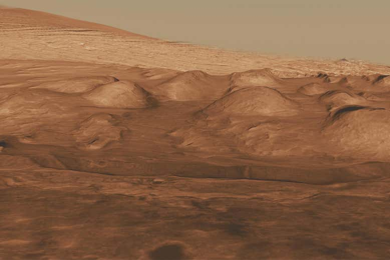

By Leah Crane
A purported ancient lake on Mars may have been far smaller than researchers thought. NASA's Curiosity rover has been exploring Gale crater for more than eight years, and while early observations suggested the entire crater may once have been filled with water, a new analysis implies that it just had a series of ponds instead.
Previous analyses of data from Curiosity have relied heavily on a measure called the chemical index of alteration to determine how rocks were weathered over time. Joseph Michalski at the University of Hong Kong and his colleagues have suggested that because this measure was developed for use on Earth, it may not be valid in the extreme Martian climate.
Instead, they analysed the concentrations of various compounds that are expected to change based on different types of weathering over time. They found that some of the layers of rock Curiosity examined did interact with water at some point in their past, but more are likely to have formed outside of the water.
“Over hundreds of metres of strata, it seems that the only layers that are demonstrably lacustrine [formed in a lake] are the lower few metres,” says Michalski. “Of the rocks visited by the rover… the fraction that is demonstrably lacustrine is something like 1 per cent.”
These rocks were mostly in the lowest few metres of sediments in the crater, suggesting the lake was not nearly as deep or extensive as we thought. “There was likely a small lake or more likely a series of small lakes in the floor of Gale crater, but these were shallow ponds,” says Michalski.
The rocks that didn’t form in water appeared to be volcanic, so Michalski says that they may have formed out of ash from volcanic eruptions after the water in Gale crater had dried up. Observations by other Mars missions have hinted that these sediments were deposited by wind, not water, so this may solve that mismatch.
Journal reference: Science Advances, DOI: 10.1126/sciadv.abh2687
Sign up to our free Launchpad newsletter for a voyage across the galaxy and beyond, every Friday